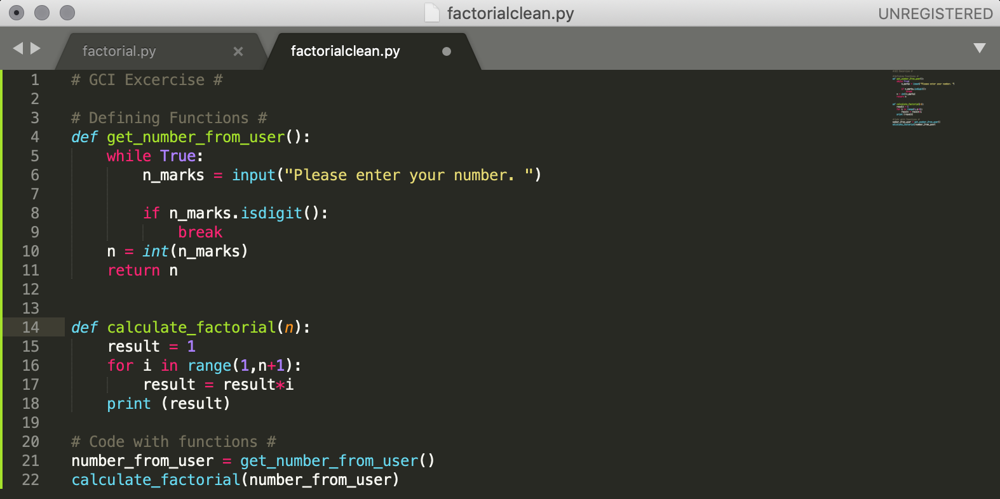
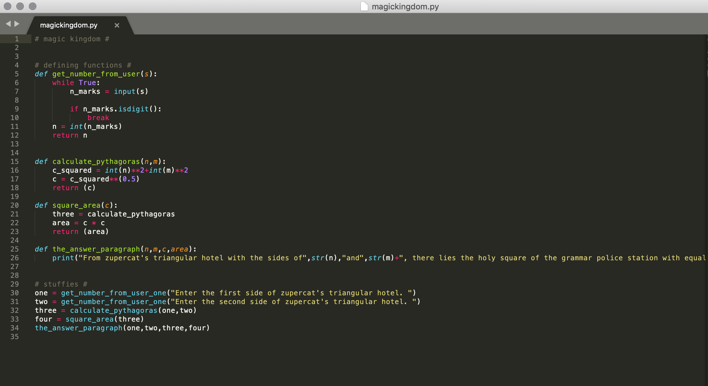
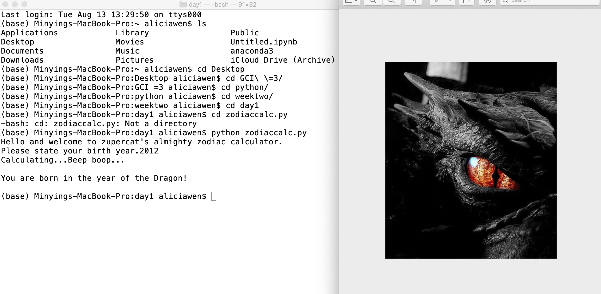

day one: setup, introductions, small excercises
-

In the morning we did some basic setup on our computers so that we could start coding and programming. It took quite long for some of the programs to download so we listened toa basic introduction to Computer Science, including it's various uses (apps, games, movies etc.) and how closely linked it is to our daily lives. After everything was set up properly, we did a few small excersises with Python. We did a little questionaire and let other people do the testing. We did a box excercise where we learned about how variables work. Finally, we programmed a little Pythagoras Theorem calculator.
Picture: Piece of coding for the pythagoras theorem calculator.
day two: personal website, if statement, indentation
-

On day two we started with editing our personal websites, which is this very website you're on right now! We modified it to our liking (changing the colours, adding new tabs etc.) and put what we learned on each day on this projects page. Afterwards, we learned about the if statement and when to use "and" and "or". To practice what we learned, we did some exercises such as coding a program that will decide whether you should go to a concert. Finally, we learned a little about identation and how it needs to be consistent if you want your code to work the way you want it to.
Picture : This is an image of the website in it's original form (before it was edited).
day three: for loops, while loops, git & github
-

We learned about loops on day three, specifically for loops and while loops. With that knowledge we created a reminders robot program that can remind you to bring things if you are going to a specific place. We also gave a go at a beginners GCI task which was a sort of factorials caculator, which was quite challenging. We also installed GIT and made our own GitHub accounts. We entered some Git commands in our terminals and we were able to make our websites go public. Now everyone can see our websites (if they can find it).
Picture: An image of the coding of a beginners GCI task that we did.
day four: github, functions, decomposition & abstraction
-

Starting out, we learned how to update our github websites with git commands in terminal. Then we did a practice exercise with loops where we had to ask the user which city they are going and some attractions there and then put that information into a complete paragraph. In the afternoon, we learned about functions. We used our GCI task code as a base and rewrote the code with functions. Finally, we learned about abstraction and decomposition in coding, as well as how we have used these two concepts when we rewrote our GCI factorials code with functions.
Picture: An image of our previous GCI task code but this time with functions.
day five: function exercises
-

On this day we mainly just did some exercises regarding functions. We did a guess your number exercise where the computer will randomly choose a number between 1-10 and the user has three chances to guess the right number. We also did a magic kingdom exercise, using functions that we had already created with the factorial exercise and also some new functions we created with our pythagorean calculator program.
Picture: Picture of the magic kingdom program.
day six: zodiac calculator, uppercase & lowercase letters
-

We created a chinese zodiac calculator step by step, using decomposition. The user enters their birth year and the zodiac calculator calculates their chinese zodiac, then opens a picture of said zodiac. The two more challenging parts of this exercise was figuring out how to calculate the zodiacs based on a birth year and opening the picture. In the afternoon, we completed a little warm-up exercise regarding lowercase and uppercase letters, preparing for the next day's tasks.
Picture: The zodiac calculator at work.
day seven: advanced string exercises
-

On day seven we did several exercises about strings. We programmed a credit card number concealer, a password checker and a palindromes checker. All three of these had an auto-grader coded at the bottom and made testing code a bit easier. We were also introduced to lists before doing these tasks which made them a little bit easier. Using decomposition, we split each big task into smaller taks. After we finished all these exercises, we did a small introduction to dictionaries.
Picture: Function that we wrote for the password checker program.
day eight: hangman
-

On this day we coded a game of hangman, where player one has to enter a secret word and player two has to guess the secret word. We decomposed the big task into smaller tasks, such as asking player one for input, hide secret word, print hangman status and more. Cutting the task into smaller chunks helped because we could do the parts we knew first and then fill in the harder parts. After we finished the hnagman task we did a dictionary exercise to finish off the day.
Picture: Function that we wrote for the password checker program.